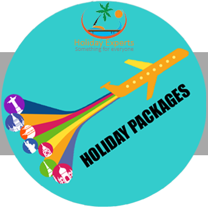
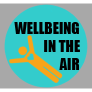

|  | ||||||||
|
|
|
|
|
 |
|
|
||
Our general advice is to carry the very minimum of hand baggage, make sure you arrive early at the airport and allow plenty of time for security screening. The rules for hand baggage can be summarised as follows:
You are allowed just one piece of hand luggage* and this must not exceed 56cm x 45cm x 25cm. Most airlines do also allow passengers to carry a handbag too, but please check with your airline to make sure
Your hand luggage must not contain any sharp items
You may only carry small amounts of liquids, gels, creams and pastes (in containers no bigger than 100ml) all these items must be inside a closed 1 litre transparent re-sealable bag (maximum size: 20cm x 20cm) which will be screened separately at security. While this means you can't carry much in the way of drinking water, once you're through security, you can use our water fountains or any of our food outlets will be happy to provide you with a glass of tap water.
You are allowed to carry greater quantities of liquids, gels, creams and pastes but you should put these in your hold luggage
We advise you to put all you can in your hold baggage (the bags you check-in). You'll have less to carry through the terminal and passing through security will be much quicker and easier There are several items that you are allowed to carry in hold luggage that you are not allowed to carry onboard with you in your hand luggage. These include:
There are some items that you're not allowed to take on your aircraft in either your hand baggage or your hold luggage. These are listed below:
Security is really important in air travel and making sure passengers only bring appropriate items on board is one of our biggest responsibilities. Below you can find specific information on different items to help you understand how much to bring and where to pack them.
Only carry what you need for the trip. Wet wipes and powdered baby food are fine, but the following will be subject to additional security screening:
When bringing pushchairs, prams or buggies, you'll need to lift your child out during X-ray checks. You can take infants' car seats on to the plane.
You can bring solid deodorants, lipsticks, brushes, combs and toothbrushes on board. Disposable contact lenses (in sealed packaging) are also allowed, as are non-disposable lenses with a small amount of solution (less than 100ml container limit applies). Only razors where the blade is fully and permanently enclosed and razor cartridges are allowed in hand baggage.
The following products must be in containers less than 100ml, and must also go in a transparent, resealable, airtight bag (20cm x 20cm). Contents must fit completely inside the bag so it can be sealed along with any liquids, creams, gels and pastes:
You're welcome to take drinks in cans, bottles, plastic containers and cartons, but these can't be over 100ml. They also need to be carried in a transparent, re-sealable, airtight bag. The size of the bag must be no larger than 20cm x 20cm, is restricted to one per person and must be closed when going through security. Remember, once through security you can buy drinks in the departure area to take on to the plane. Drinks that are open or that you are consuming prior to the Security checkpoint cannot be carried through and must be fully consumed or discarded.
At our security checkpoints you may be asked to remove MP3 and CD players, portable DVD players and laptops from your baggage to be screened separately. Digital cameras and mobile phones can stay in your hand baggage or jacket to be X-rayed. You can also bring gas hair tongs, but remember you cannot carry any spare gas refills in either your hold or hand baggage.
Lithium batteries should be carried in your hand luggage only.
You can carry fruit, vegetables and all solid foods in your hand baggage. However, foods in sauces or with a high liquid content (such as sauces, pastes, soups and stews) cannot come through security.
The size of container must not exceed 100ml, regardless of the amount contained inside. Please note that jams, honey and other preserves are also subject to these restrictions.
Medicines can't exceed the 100ml maximum, and must be kept in a transparent, re-sealable bag. There's no limit for powder or pills. If your medical needs mean you must carry more, you'll need approval from your airline. Always carry your prescription with you, or a statement from a medical professional.
All medicines are subject to additional security screening.
Insulin, EpiPens, hypodermic needles and medicines must be supported by a medical certification letter, as must children's medicine.
Please check with your airline about your requirements before travelling, but be reassured that if you have a genuine medical condition (supported by a letter from your GP or hospital) then there should be no problem with taking such items on board the plane. However, please ensure you get the consent of the airline with whom you are travelling.
Please responsibly pack any equipment that you need to minimise the likelihood of security staff incurring puncture wounds. Please notify our security staff that your hand baggage contains your equipment when you present it at security control.
Inhalers are allowed in hand baggage, but you must pack spare canisters in your hold baggage. As for essential medical equipment, you'll need prior approval from your airline unless it fits within your hand baggage. Please clearly mark it essential medical equipment.
Chest Muscles Remember, non-prescription medicines for children and adults can be purchased after you've gone through security
The following items are forbidden in hand baggage:
The following items are forbidden anywhere on the aircraft:
Cigarettes and other tobacco products are all allowed in hand baggage.
You can carry one lighter only on board the aircraft, which must be kept on your person throughout the flight. You will be asked to leave any additional lighters at the security point, so please make sure you only carry one on your trip.
Both lighters and e-cigarettes must be included within the liquid allowance and placed inside the one litre plastic bag for screening. Once the one litre bag has been screened, the lighter/e-cigarette must be removed from the plastic bag and carried on your person.
Please note the e-cigarettes are banned completely from hold luggage.
Matches and lighters are not allowed in hand or checked in baggage. You may take a single butane lighter or a box of safety matches on board the aircraft but only if carried on your person. Zippo lighters are also allowed as your one lighter.
Smoking of cigarettes and e-cigarettes is not permitted inside the terminal building.
Ballpoint pens, rollerball pens, gel pens and pencils are allowed, as are fountain pens with a single open cartridge in use, but any refills cannot exceed 100ml.
Books, puzzles, games and stickers may be taken on board.
Hat boxes, sports equipment and wedding dresses all constitute an item of hand baggage. However, these must fit within the baggage size and weight restrictions. Please check with your airline if in doubt.
Some airlines only allow hoverboards in the hold. We advise you to check directly with your airline if you plan to travel with one.
You can bring musical instruments in addition to your hand baggage allowance.
Lithium batteries should be carried in your hand luggage only.
|
|
||||||||||||||||||||||||||||||